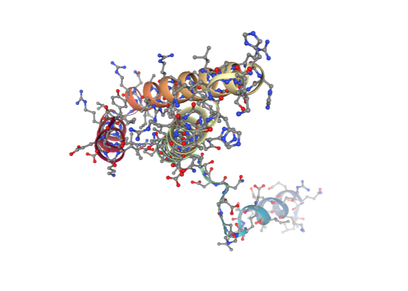
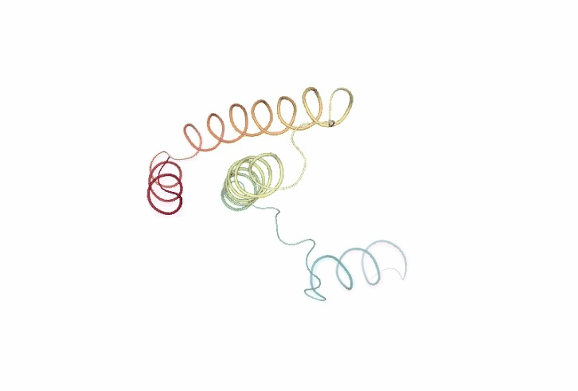
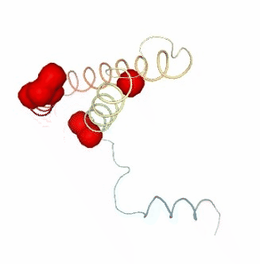
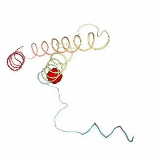
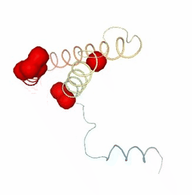
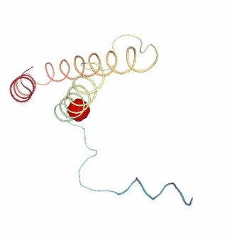

Protein structure flexibility tutorial using BioExcel Building Blocks (biobb) and FlexServ tools
Based on the FlexServ server: https://mmb.irbbarcelona.org/FlexServ/
This tutorial aims to illustrate the process of generating protein conformational ensembles from 3D structures and analysing its molecular flexibility, step by step, using the BioExcel Building Blocks library (biobb).
The notebook reproduces the workflow integrated in the FlexServ web-based tool for the analysis of protein flexibility. The workflow incorporates powerful protocols for the coarse-grained determination of protein dynamics using different versions of Normal Mode Analysis (NMA), Brownian dynamics (BD) and Discrete Dynamics (DMD). It also includes a set of flexibility analyses using a large variety of metrics, including basic geometrical analysis, B-factors, essential dynamics, stiffness analysis, collectivity measures, Lindemanns indexes, residue correlation, chain-correlations, dynamic domain determination, hinge point detections, etc. Data is represented using NGL 3D-structure visualizer and Plotly 2D plots.
The particular structure used is the Ribosomal Protein S15 from Bacillus Stearothermophilus (PDB code 1A32, https://www.rcsb.org/structure/1A32).
The codes wrapped are the FlexServ and PCAsuite tools:
FlexServ: an integrated tool for the analysis of protein flexibility.
Bioinformatics, Volume 25, Issue 13, 1 July 2009, Pages 17091710.
Available at: https://doi.org/10.1093/bioinformatics/btp304
PCA suite: https://mmb.irbbarcelona.org/software/pcasuite/
Essential Dynamics: A Tool for Efficient Trajectory Compression and Management.
J. Chem. Theory Comput. 2006, 2, 2, 251258
Available at: https://doi.org/10.1021/ct050285b
pyPcazip: A PCA-based toolkit for compression and analysis of molecular simulation data.
SoftwareX, Volume 5, 2016, Pages 44-50
Available at: https://doi.org/10.1016/j.softx.2016.04.002
Settings
Biobb modules used
- biobb_flexserv: Tools to compute biomolecular flexibility on protein 3D structures.
- biobb_io: Tools to fetch biomolecular data from public databases.
- biobb_structure_utils: Tools to modify or extract information from a PDB structure.
- biobb_analysis: Tools to analyse Molecular Dynamics trajectories.
Auxiliar libraries used
- jupyter: Free software, open standards, and web services for interactive computing across all programming languages.
- nglview: Jupyter/IPython widget to interactively view molecular structures and trajectories in notebooks.
- plotly: Python Open Source Graphing Library.
- simpletraj: Lightweight coordinate-only trajectory reader based on code from GROMACS, MDAnalysis and VMD.
Conda Installation and Launch¶
Take into account that, for this specific workflow, there are two environment files, one for linux OS and the other for mac OS:
linux¶
git clone https://github.com/bioexcel/biobb_wf_flexserv.git
cd biobb_wf_flexserv
conda env create -f conda_env/environment.linux.yml
conda activate biobb_wf_flexserv
jupyter-notebook biobb_wf_flexserv/notebooks/biobb_wf_flexserv.ipynb
macos¶
git clone https://github.com/bioexcel/biobb_wf_flexserv.git
cd biobb_wf_flexserv
conda env create -f conda_env/environment.macos.yml
conda activate biobb_wf_flexserv
jupyter-notebook biobb_wf_flexserv/notebooks/biobb_wf_flexserv.ipynb
Pipeline steps
- Input Parameters
- Molecular Flexibility Representation/Generation
- Molecular Flexibility Analyses
- Questions & Comments
|
|

|
Input parameters
Input parameters needed:
- Auxiliar libraries: Libraries to be used in the workflow are imported once at the beginning
- pdbCode: PDB code of the protein structure (e.g. 1A32, https://www.rcsb.org/structure/1A32)
- md_pcz: PCZ file for the compressed 10-ns MD trajectory of the 1A32 protein taken from the MoDEL database
import nglview
import simpletraj
import plotly
import plotly.graph_objs as go
import numpy as np
import ipywidgets
import json
pdbCode = "1a32"
#md_pcz = "Files/1a32.ca.1.pcz"
md_pcz = "Files/1a32.MoDEL.pcz"
Molecular Flexibility Representation/Generation
Despite recent advances in experimental techniques, the study of molecular flexibility is mostly a task for theoretical methods. The most powerful of them is atomistic molecular dynamics (MD), a rigorous method with solid physical foundations, which provides accurate representations of protein flexibility under physiological-like environments. Unfortunately, despite its power, MD is a complex technique, computationally expensive and their use requires a certain degree of expertise. The alternative to atomistic MD is the use of coarse-grained methods coupled to simple potentials. By using these techniques we assume a lost of atomic detail to gain formal and computational simplicity in the representation of near-native state flexibility of proteins. Unfortunately, despite its power, the practical use of coarse-grained methods is still limited, due mostly to the lack of standardized protocols for analysis and the existence of a myriad of different algorithms distributed in different websites.
FlexServ webserver and associated BioBB module integrate three coarse-grained algorithms for the representation of protein flexibility:
i) Brownian dynamics (BD)
ii) Discrete dynamics (DMD)
iii) Normal mode analysis (NMA) based on different types of elastic networks
This tutorial shows how to extract molecular flexibility (conformational ensemble) from a single, static structure downloaded from the PDB database, generating its coarse-grained, reduced representation ($C_{\alpha}$) and running the previously mentioned coarse-grained algorithms.
Fetching PDB structure
Downloading PDB structure with the protein molecule from the RCSB PDB database.
Alternatively, a PDB file can be used as starting structure.
Building Blocks used:
- Pdb from biobb_io.api.pdb
# Downloading desired PDB file
# Import module
from biobb_io.api.pdb import pdb
# Create properties dict and inputs/outputs
downloaded_pdb = pdbCode+'.pdb'
prop = {
'pdb_code': pdbCode,
'api_id' : 'mmb'
}
#Create and launch bb
pdb(output_pdb_path=downloaded_pdb,
properties=prop)
# Show protein
view = nglview.show_structure_file(downloaded_pdb)
view.add_representation(repr_type='ball+stick', selection='allb')
view._remote_call('setSize', target='Widget', args=['','600px'])
view

Generate Coarse Grain Structure
Extracting the alpha carbons from the protein structure to generate a reduced, coarse grain structure. This structure is the one used by the different FlexServ ensemble generators (BD, DMD, NMA).
Building Blocks used:
- extract_atoms from biobb_structure_utils.utils.extract_atoms
from biobb_structure_utils.utils.extract_atoms import extract_atoms
ca_pdb = pdbCode + "_ca.pdb"
prop = {
'regular_expression_pattern': '^CA'
}
extract_atoms(input_structure_path=downloaded_pdb,
output_structure_path=ca_pdb,
properties=prop)
# Show protein
view = nglview.show_structure_file(ca_pdb)
view.clear_representations()
view.add_representation(repr_type='ball+stick', selection='all', color='grey')
view._remote_call('setSize', target='Widget', args=['','600px'])
view

Brownian Dynamics
The Brownian Dynamics (BD) method introduces the protein in an stochastic bath that keeps the temperature constant and modulates the otherwise extreme oscillations of the residues. This bath is simulated with two terms accounting for a velocity-dependent friction and stochastic forces due to the solvent environment.
Velocity Verlet algorithm is used to solve the stochastic differential equation (equation of motion) for alpha-carbons ($C\alpha$):
where m stands for the effective mass of $C\alpha$ (see below), $\upsilon$ and $\dot{\upsilon}$ stands for velocity and acceleration, F represent the force, $\gamma$ is the inverse of a characteristic time at which the particle loses its energy in a given solvent, and finally the random term is considered a Robust white noise $\eta(t)$ with autocorrelation given by:
where $k_{B}$ is the Boltzmann constant, and t is the temperature of the stochastic bath. The Dirac functions $\delta_{ln}$ and $\delta(t - t^{\prime})$ force the independence of the components of the noise vector.
The equation of motion is integrated using Verlets algorithm, giving for the velocities and positions after time:
and
where $\tau = m \gamma^{-1}$ is the characteristic time, and $\Delta \vec{r}_{i}^{G}$, $\Delta \vec{v}_{i}^{G}$ are the changes in position and velocity induced by the stochastic term.
The potential energy used to compute forces in the equation of motion assumes a coarse-grained representation of the protein ($C\alpha$-only) and a quasi-harmonic representation of the interactions (similar to that suggested by Kovacs et al. 2004):
where $r_{ij} = r_{i} - r_{j}$ stands for the vector connecting $C\alpha$ atoms i and j.
The initial condition is a native structure (or MD-averaged conformation) that is supposed to be in the minimal energy state, from which the relative vectors $\vec{r}_{ij}^{0}$ are computed. After some tests, factor C is taken to be 40 kcal/mol and r***, being the **mean distance between two consecutive $C\alpha$ atoms, is set to 3.8. The mass of all $C\alpha$ atoms is set to 100 daltons (i.e, that of an average residue). The velocity-dependent friction $\gamma$ is considered to have the same value as for water (i.e., 0.4 ps-1). Brownian Dynamics (BD) simulation time scales were equivalent to those considered in Molecular Dynamics (MD).
Reference:
Exploring the Suitability of Coarse-Grained Techniques for the Representation of Protein Dynamics.
Biophysical Journal, Volume 95, Issue 5, 1 September 2008, Pages 2127-2138
Available at: https://doi.org/10.1529/biophysj.107.119115
Building Blocks used:
- bd_run from biobb_flexserv.flexserv.bd_run
# Running Brownian Dynamics (BD)
# Import module
from biobb_flexserv.flexserv.bd_run import bd_run
# Create properties dict and inputs/outputs
bd_log = 'bd_ensemble.log'
bd_crd = 'bd_ensemble.mdcrd'
prop = {
'binary_path': "bd",
'time': 10000,
'wfreq': 100
}
bd_run(
input_pdb_path=ca_pdb,
output_crd_path=bd_crd,
output_log_path=bd_log,
properties=prop
)
Fitting and converting BD trajectory to DCD (visualization)
Fitting and converting the generated Brownian Dynamics (BD) coarse-grained trajectory from the mdcrd format to a dcd format, for the sake of visualization with NGL (see next cell).
Building Blocks used:
- cpptraj_rms from biobb_analysis.ambertools.cpptraj_rms
from biobb_analysis.ambertools.cpptraj_rms import cpptraj_rms
bd_rmsd = 'bd_ensemble_rmsd.dat'
bd_dcd = 'bd_ensemble.dcd'
prop = {
'start': 1,
'end': -1,
'steps': 1,
'mask': 'c-alpha',
'reference': 'experimental'
}
cpptraj_rms(input_top_path=ca_pdb,
input_traj_path=bd_crd,
output_cpptraj_path=bd_rmsd,
output_traj_path=bd_dcd,
input_exp_path= ca_pdb,
properties=prop)
# Show trajectory
view = nglview.show_simpletraj(nglview.SimpletrajTrajectory(bd_dcd, ca_pdb), gui=True)
view._remote_call('setSize', target='Widget', args=['','600px'])
view

Discrete Molecular Dynamics
With the Discrete Molecular Dynamics (DMD) method, the proteins are modelled as a system of beads ($C\alpha$ atoms) interacting through a discontinuous potential (square wells in the used tool). Outside the discontinuities, potentials are considered constant, thereby implying a ballistic regime for the particles (constant potential, constant velocity) in all conditions, except at such time as when the particles reach a potential discontinuity (this is called an event or a collision). At this time, the velocities of the colliding particles are modified by imposing conservation of the linear momentum, angular momentum, and total energy. Since the particles were constrained to move within a configurational space where the potential energy is constant (infinite square wells), the kinetic energy remains unchanged and therefore all collisions are assumed to be elastic.
DMD has a major advantage over techniques like MD because, as it does not require the integration of the equations of motion at fixed time steps, the calculation progresses from event to event. In practice, the time between events decreases with temperature and density and depends on the number of particles
N approximately as $N^{-\frac{1}{2}}$. The equation of motion, corresponding to constant velocity, is solved analytically:
where $t_{c}$ is the minimum amongst the collision times $t_{ij}$ between each pair of particles i and j, given by:
where $r_{ij}$ is the square modulus of $\vec{r_{ij}}=\vec{r_j}-\vec{r_i}$, $\nu_{ij}$ is the square modulus of $\vec{\nu_{ij}}=\vec{\nu_j}-\vec{\nu_i}$, $b_{ij}=\vec{r_{ij}}\cdot\vec{\nu_{ij}}$, and d is the distance corresponding to a discontinuity in the potential (the signs + and - before the radical are used for particles approaching one another and moving apart, respectively).
As the integration of Newtons equations is no longer the rate limiting step, calculations can be extended for very long simulation periods and large systems, provided an efficient algorithm for predicting collisions is used.
The collision between particles i and j is associated with a transfer of linear momentum in the direction of the vector $\vec{r_{ij}}$. Thus,
where the prime indices variables after the event.
To calculate the change in velocities, the velocity of each particle is projected in the direction of the vector $\vec{r_{ij}}$ so that the conservation equations become one-dimensional along the interatomic coordinate.
which implies
From the previous 4 equations, the transferred momentum is readily determined as:
and the final velocities of particles i and j are determined through the previous equations $ m_{i}\vec{v_{i}}$ and $ m_{j}\vec{v_{j}} + \Delta \vec{p}$.
The interaction potentials are defined as infinite square wells, such that the particle-particle distances vary between $d_{min}=(1-)r_{ij}^{0}$ and $d_{max}=(1+)r_{ij}^{0}$, $r_{ij}^{0}$ being the distance in the native conformation and 2 the width of the square well. The MD-averaged conformation is taken as the native conformation. Residue-residue interaction potentials are defined only for the particles at a distance smaller than a cut-off radius $r_{c}$ in the native conformation. Otherwise the particles only interact via a hardcore repulsive potential that avoids steric clashes. For non-consecutive $C\alpha$ particles, $r_{c} = 8 $ and = 0.1 were used, while for consecutive pairs of residues a smaller well width ( = 0.05) was chosen to keep the C C distances closer to the expected value (3.8 ).
Building Blocks used:
- dmd_run from biobb_flexserv.flexserv.dmd_run
# Running Discrete Molecular Dynamics (DMD)
# Import module
from biobb_flexserv.flexserv.dmd_run import dmd_run
# Create properties dict and inputs/outputs
dmd_log = 'dmd_ensemble.log'
dmd_crd = 'dmd_ensemble.mdcrd'
dmd_run(
input_pdb_path=ca_pdb,
output_crd_path=dmd_crd,
output_log_path=dmd_log
)
Fitting and converting DMD trajectory to DCD (visualization)
Fitting and converting the generated Discrete Molecular Dynamics (DMD) coarse-grained trajectory from the mdcrd format to a dcd format, for the sake of visualization with NGL (see next cell).
Building Blocks used:
- cpptraj_rms from biobb_analysis.ambertools.cpptraj_rms
from biobb_analysis.ambertools.cpptraj_rms import cpptraj_rms
dmd_rmsd = 'dmd_ensemble_rmsd.dat'
dmd_dcd = 'dmd_ensemble.dcd'
prop = {
'start': 1,
'end': -1,
'steps': 1,
'mask': 'c-alpha',
'reference': 'experimental'
}
cpptraj_rms(input_top_path=ca_pdb,
input_traj_path=dmd_crd,
output_cpptraj_path=dmd_rmsd,
output_traj_path=dmd_dcd,
input_exp_path=ca_pdb,
properties=prop)
# Show trajectory
view = nglview.show_simpletraj(nglview.SimpletrajTrajectory(dmd_dcd, ca_pdb), gui=True)
view._remote_call('setSize', target='Widget', args=['','600px'])
view

Normal Mode Analysis
Normal Mode Analysis (NMA) can be defined as the multidimensional treatment of coupled oscillators from the analysis of force-derivatives in equilibrium conformations. This methodology assumes that the displacement of an atom from its equilibrium position is small and that the potential energy in the vicinity of the equilibrium position can be approximated as a sum of terms that are quadratic in the atomic displacements. In its purest form, it uses the same all-atom force field from a MD simulation, implying a prior in vacuo minimization (Go and Scheraga 1976; Brooks III, Karplus et al. 1987).
Tirion (1996) proposed a simplified model where the interaction between two atoms was described by Hookean pairwise potential where the distances are taken to be at the minimum, avoiding the minimization (referred as Elastic Network Model -ENM-). This idea being further extended to use coarse-grained ($C\alpha$) protein representation by several research groups, as in the Gaussian Network Model -GNM- (Bahar et al. 1997; Haliloglu et al. 1997). The GNM model was later extended to a 3-D, vectorial Anisotropic Network Model -ANM-, which is the formalism implemented in the FlexServ server and the BioBB FlexServ module (Atilgan et al. 2001). Through the diagonalization of the hessian matrix, the ANM provides eigenvalues and eigenvectors that not only describe the frequencies and shapes of the normal modes, but also their directions.
Within the Elastic Network Model approach (ENM) the network topology is described by a Kirchhoff matrix of inter-atomic contacts where the ij-th element is equal to -1 if nodes (i.e. $C\alpha$) i and j are within the cutoff distance $r_{c}$, and zero otherwise, and the diagonal elements (ii-th) are equal to the connectivity of the residue:
In the ANM approach, the potential energy between two residues i-j is given by:
where $r_{ij}$ and $r_{ij}^{0}$ are the instantaneous and reference (equilibrium) position vectors of atoms i and j and is the force constant; in the original formalism by Atilgan et al, =1 kcal/mol. (see below).
For the sake of simplicity, the product of the force constant for a given i, j pair $_{ij}$ and the corresponding Kirchhoff matrix element $_{ij}$ can be expresed as a single stiffness constant $K_{ij}$:
The molecular Hamiltonian is given by the elastic energy to displace a protein from its equilibrium conformation:
This potential function is used to build a Hessian matrix (H), a 3N x 3N matrix (N is the number of nodes in the protein) defined as N x N submatrices $H_{ij}$ containing the second derivatives of the energy respect the coordinates of each protein node. Diagonalization of the Hessian yields the eigenvectors (the essential deformation modes) and the associated eigenvalues (stiffness constants).
As presented, NMA defines springs between all pairs of residues with no zero elements in the corresponding Kirchhoff matrix element $_{ij}$. In principle all inter-residue force-constants have then two possible values: 0 if the residues are not connected (Kirchhoff matrix element equal to 0) and otherwise. The standard approach (Tirion 1996) defines the connectivity index by using an spherical cutoff $r_{c}$:
$\large \Gamma_{ij} = 0$ otherwise
Cutoff distances around 8-12 have been used, being the most usual the range 8-9 Angstroms, although some authors have explored values as high as 20-25 (Sen & Jernigan, 2006). Different cut-off radii can be used for different proteins based on size, shape, density or other protein characteristics.
Regarding the force constant parameter , many authors set values equal to 1, which means that eigenvectors have physical sense, but eigenvalues are not realistic. Alternatively, can be fitted to reproduce X-ray B-factors or MD simulation results.
This approximation, with interactions defined by an uniform within a cutoff, is referred to as distance cutoff, and despite its simplicity provides good descriptions of large-scale molecular motions (Bahar and Rader, 2005; Ma, 2005). However, the use of an empirical cutoff, though useful to eliminate irrelevant interactions and explore topological constraints in equilibrium dynamics, introduces a sharp discontinuity in the Hamiltonian and some degree of arbitrareness and uncertainty in the method. Other approaches have been developed to define continuum functions for the spring constant. Kovacs et al. (2004) developed a simple function that assumes an inverse exponential relationship between the distance and the force-constant:
where C is a stiffness constant (taken as 40 kcal/mol ), r* is a fitted constant, taken as the mean $C\alpha - C\alpha$ distance between consecutive residues (3.8 Angstroms), $r_{ij}^{0}$ is the equilibrium distance between the $C\alpha$ of residues i and j and $as_{ij}$ is an inter residue-residue constant surface. In practice, the surface correction is small and has been ignored in our implementation of the method, available in the FlexServ server and BioBB FlexServ module as an alternative to standard cutoff-based method. This method maintains the simplicity of the original method and avoids the problems intrinsic to the use of a .cutoff. The major drawback is that, by connecting all residues in the network, both increases the rigidity of the system and lowers the speed of the computation.
The cutoff-based and Kovacs versions of NMA were improved with multi-parametric fitting of NMA to atomistic MD simulations in a large number of proteins (CITE!! Orellana et al., to be published). The refined method, which is available in the FlexServ server and the BioBB FlexServ module, defines a network topology by an effective Kirchhoff matrix that is the sum of a Rouse Chain topology matrix for the first 3 neighbours, with a usual Kirchhoff matrix for distant interactions, rendering a mixed connectivity matrix that combines both sequential and distant information. Thus, given a pair of residues i, and j with sequential distance $S_{ij}>0$ and Cartesian distance $r_{ij}$, the ij-th element of the inter-residue contact matrix is defined as:
The distance (both in Cartesian and Sequence space) dependence of the force-constant, and the associated scaling factors $C_{cart}$ and $C_{seq}$ were adjusted to reproduce atomistic MD simulations ($C_{seq}$=60 kcal/mol. and $C_{cart}$=6 kcal/mol., lower or higher values can be considered for extremely small or large systems). The same fitting procedure was followed to obtain a size-dependent cutoff distance ($r_{c}$), that can be approximated with a logarithmic function of the protein length, with extreme values of 8 and 16 Angstroms for most proteins (up to 17-20 Angstroms for extremely large proteins, above 700 residues). Thus the MD-ANM mixed model combines an MD calibrated inverse exponential function with a length-dependent cutoff to discard redundant interactions, also improving computational efficency. The resulting network gives flexibility patterns closest to MD, being not only the eigenvectors, but also the eigenvalues more physically meaningful.
Our FlexServ server and BioBB FlexServ module implement the ANM formalism with the three different definitions of the force constants described above:
The so called linear or distance-cutoff formalism, equal to the original ANM but with a default =10 kcal/mol. for the ANM linear implementation as in elNmo (Suhre & Sanejouand (2004)). The default cutoff value in this case is 8, or 9 for larger proteins (above 150-200 residues).
The Kovacs, inverse exponential formalism, in which the force constant is defined by a continuous function; the default values of C=40 kcal/mol , and $r_{ij}^{0}=3.8 $ is used; $as_{ij}$ term is neglected.
The Mixed formalism, in which the force constant follows a complex definition with all parameters ($r_{c}$, $C_{cart}$ and $C_{cont}$) fitted according to MD simulations as explained before:
Once NMA is performed and the set of eigenvectors/eigenvalues is determined, Cartesian pseudo-trajectories at physiologic temperature can be obtained by activating normal mode deformations using a Metropolis Monte Carlo algorithm with a Hamiltonian defined as shown above. The displacements obtained by such algorithm can then be projected to the Cartesian space to generate the pseudo-trajectories. Note that by limiting the size of the sum in the molecular hamiltonian equation to only important eigenvectors (m<n), the trajectory can be enriched in sampling of essential deformation modes (Rueda et al. 2007a).
where $K_i=\frac{k_BT}{2\lambda}$ ( being the eigenvalue in distance units) and $\Delta D_{i}$ is the displacement along the mode.
Building Blocks used:
- nma_run from biobb_flexserv.flexserv.nma_run
# Running Normal Mode Analysis (NMA)
# Import module
from biobb_flexserv.flexserv.nma_run import nma_run
# Create properties dict and inputs/outputs
nma_log = 'nma_ensemble.log'
nma_crd = 'nma_ensemble.mdcrd'
prop = {
'frames' : 50
}
nma_run(
input_pdb_path=ca_pdb,
output_crd_path=nma_crd,
output_log_path=nma_log,
properties=prop
)
Fitting and converting NMA trajectory to DCD (visualization)
Fitting and converting the generated Normal Mode Analysis (NMA) coarse-grained trajectory from the mdcrd format to a dcd format, for the sake of visualization with NGL (see next cell).
Building Blocks used:
- cpptraj_rms from biobb_analysis.ambertools.cpptraj_rms
from biobb_analysis.ambertools.cpptraj_rms import cpptraj_rms
nma_rmsd = 'nma_ensemble_rmsd.dat'
nma_dcd = 'nma_ensemble.dcd'
prop = {
'start': 1,
'end': -1,
'steps': 1,
'mask': 'c-alpha',
'reference': 'experimental'
}
cpptraj_rms(input_top_path=ca_pdb,
input_traj_path=nma_crd,
output_cpptraj_path=nma_rmsd,
output_traj_path=nma_dcd,
input_exp_path=ca_pdb,
properties=prop)
# Show trajectory
view = nglview.show_simpletraj(nglview.SimpletrajTrajectory(nma_dcd, ca_pdb), gui=True)
view._remote_call('setSize', target='Widget', args=['','600px'])
view

Molecular Flexibility Analyses
The following cells of the notebook incorporate a large variety of methods to characterize flexibility. From basic analysis like structural oscillation using root mean square deviation (RMSd) to more complex methods such as Essential Dynamics (ED) routines (Amadei, et al., 1993). Essential Dynamics technique, based in the well-known Principal Components Analyisis (PCA) statistical method, is extensively used to characterize the most important deformation modes obtained by diagonalization of the trajectory covariance matrix. The eigenvectors represent the nature of the essential deformation patterns, while the eigenvalues can be transformed into the frequencies or stiffness of these movements. Essential deformation movements are ranked by importance and can be visualized and processed to obtain information (see Meyer, et al., 2006; Rueda, et al., 2007a for a detailed explanation), such as B-Factor profiles, the collectivity index (a measure of the collective nature of protein motions, Brschweiler, 1995), the variance profile, the dimensionality (the number of movements defining a percentage of variance), or the size of the essential space (the number of modes with eigenvalues > 1 ). Lindemanns indexes are computed to evaluate the liquid/solid nature of the entire or partial regions of the protein (Rueda, et al., 2007b; Zhou, et al., 1999).
Advanced capabilities include calculation of the apparent stiffness between interacting residues (obtained by inverting the inter-residue covariance, Rueda, et al., 2007a) and the determination of residue-correlations using different algorithms that allow the user to filter non-relevant or spurious correlations.
Other advanced tools allow the determination of dynamic domains and hinge points using a variety of techniques: i) exploration of the B-factor landscape after fitting with the gaussian RMSd method, ii) analysis of the force-constant profile (Sacquin-Mora and Lavery, 2006) and iii) clustering by inter-residue correlation (Navizet, et al., 2004). Calculations are performed using different sliding windows to reduce noise and false positives.
In all the analysis the resulting data is presented as a json-formatted files, and 2D plots are generated when appropriate.
PCAsuite: Compressing trajectory
PCAsuite is used to compress Molecular Dynamics (MD) trajectories using Principal Component Analysis (PCA) algorithms. This technique offers a good compression ratio at the expense of losing some precision in the trajectory.
One of the main shortcomings to popularize the use of Molecular Dynamics is its potentially large trajectory files. State-of-the-art simulations in the high nanosecond time scale can span easily several GB, especially for large systems. Traditional general compression algorithms like LempelZivWelch (LZW) (Lemple, Welch, Ziv, 1984) have been used in order to reduce the required space, but they usually do not perform well with this kind of data. However, trajectory data is not random. It follows patterns with well defined meaning that can be exploted for data compression. In particular, higher frequency movements can be discarded without affecting the overall dynamics of the system. Principal Component Analysis is one of the most used techniques to capture the essential movements of a macromolecular system. It implies a change in the coordinate space where reference eigenvectors are chosen according to the amount of system variance explained. The aim is to select the minimum number of reference coordinates that explain a given amount of system variance. The technique allows to select the degree of fidelity to the original trajectory. Chosing all eigenvectors there is no change in the accurancy of the trajectory. However, removing eigenvectors with the lowest amount of explained variance, has little effect on the overall behavior of the system, but has a remarkable effect on the size of the data.
Let's suppose we have a MD trajectory of N atoms and F frames. The first action is to prepare the input for the real processing and compression. Trajectory must be superimposed onto a representative structure. This would minimize the oscilations around the average structure and, hence, minimize the number of required eigenvectors. This action is performed in three steps:
- Superimpose all the snapshots of the trajectory onto the first one
- Compute the average snapshot after the first step
- Superimpose all the snapshots onto the computed average
The superimposition is performed looking for the best RMSd fit. This value can be computed using two different algorithms:
- A standard, Kabsch-based, RMSd algorithm
- A Gaussian RMSd algorithm (Damm & Carlson, 2006) that gives more weight to the still atoms and less weight to the moving atoms
The gaussian RMSd algorithm may help to reduce the number of eigenvectors needed for a given compression, thus reducing the size of the compressed file. The gaussian RMSd algorithm also allows for other analysis, like the hinge point prediction, much more difficult and imprecise using a standard RMSd algorithm.
The first step is to compute the covariance matrix of the trajectory, where the random variables are the coordinates of the N atoms. This leads to a symmetric square matrix of 3N x 3N dimensions. The matrix is then diagonalized to get the associated eigenvalues and eigenvectors. The sum of all the eigenvalues is the total variance of the trajectory, and the individual eigenvalues are the variance quantity explained by the corresponding eigenvector. Using this data the number of eigenvectors that explain the desired percentage of the total variance can be selected (NV). A higher number of eigenvector implies a more accurate representation of the original trajectory, but leads to a lower compression rate.
Once the eigenvectors have been selected, coordinates of the original F frames are projected onto the new coordinate space. The final output of the algorithm contains the average structure, the eigenvectors and the calculated projections. The size of stored coordinates is reduced from F x 3N to F x 3NV. PCA suite also stores other information, like the eigenvalues and the atom names to allow to perform the analysis and manipulations in a quick and more flexible way.
PCA suite works natively with the PCZ4 format (also supporting files stored in old PCZ2 and PCZ3 formats). All the formats are binary-based.
The next cell is compressing the previously generated coarse-grained trajectory file.
References:
PCA suite: https://mmb.irbbarcelona.org/software/pcasuite/
Essential Dynamics: A Tool for Efficient Trajectory Compression and Management.
J. Chem. Theory Comput. 2006, 2, 2, 251258
Available at: https://doi.org/10.1021/ct050285b
pyPcazip: A PCA-based toolkit for compression and analysis of molecular simulation data.
SoftwareX, Volume 5, 2016, Pages 44-50
Available at: https://doi.org/10.1016/j.softx.2016.04.002
Building Blocks used:
- pcz_zip from biobb_flexserv.pcasuite.pcz_zip
from biobb_flexserv.pcasuite.pcz_zip import pcz_zip
bd_pcz = 'bd_ensemble.pcz'
dmd_pcz = 'dmd_ensemble.pcz'
nma_pcz = 'nma_ensemble.pcz'
prop = {
'variance': 90,
'neigenv' : 10,
'gauss_rmsd' : True
}
pcz_zip( input_pdb_path=ca_pdb,
input_crd_path=bd_crd,
output_pcz_path=bd_pcz,
properties=prop)
pcz_zip( input_pdb_path=ca_pdb,
input_crd_path=dmd_crd,
output_pcz_path=dmd_pcz,
properties=prop)
pcz_zip( input_pdb_path=ca_pdb,
input_crd_path=nma_crd,
output_pcz_path=nma_pcz,
properties=prop)
PCAsuite: Uncompressing trajectory
The PCA suite data compression method based on principal component analysis works remarkably well with MD trajectory data, permitting files to be reduced to typically less than one tenth of their original size with very acceptable levels of approximation.
The compressed trajectory can also be uncompressed (back-projected) to an atomistic ASCII mdcrd format, although, as expected, the neglect of fast intramolecular vibration (lossy compression) generates some deviations of bond lengths and angles from the optimum values and eventually to some incorrect van der Waals contacts. However, these alterations do not affect key intramolecular interactions such as stacking or hydrogen bond interactions. When the compression procedure is performed using only the first eigenvector (typically explaining between 20 and 35% of the variance), the RMSd between original and back-projected conformations is reduced to 1-3 (in average). When the space is expanded to consider the first 10 eigenvectors (around 50-60% of the total variance), the RMSd is similar or less than 1 (in average). The error is reduced to around 0.3 (10 ns trajectories) or 0.5 (100 ns trajectories) when the important eigenvectors are defined using a 95% variance cutoff and to around 0.1 (10 ns trajectories) and 0.2 (100 ns trajectory) when the 99% variance cutoff is used.
The compression method is exact when all the eigenvectors are considered. However, its computational efficiency should increase as trajectory behaves more harmonically. Thus, the method is less accurate when working with trajectories following irreversible transitions (nonequilibrium trajectories).
Overall, the compression procedure provides a set of coordinates that is nearly indistinguishable (for most purposes) from the original ones, with the size of the compressed files being on average from 8% to 20% reduced compared with the size of the original trajectories. The reduction becomes more evident for longer trajectories.
The next cell is uncompressing a PCZ-formatted file.
Building Blocks used:
- pcz_unzip from biobb_flexserv.pcasuite.pcz_unzip
- cpptraj_rms from biobb_analysis.ambertools.cpptraj_rms
# Uncompressing the PCZ files
from biobb_flexserv.pcasuite.pcz_unzip import pcz_unzip
bd_crd_uncompressed = 'bd_ensemble_uncompressed.crd'
dmd_crd_uncompressed = 'dmd_ensemble_uncompressed.crd'
nma_crd_uncompressed = 'nma_ensemble_uncompressed.crd'
pcz_unzip(input_pcz_path=bd_pcz,
output_crd_path=bd_crd_uncompressed)
pcz_unzip(input_pcz_path=dmd_pcz,
output_crd_path=dmd_crd_uncompressed)
pcz_unzip(input_pcz_path=nma_pcz,
output_crd_path=nma_crd_uncompressed)
# Converting from mdcrd to DCD format (visualization)
from biobb_analysis.ambertools.cpptraj_rms import cpptraj_rms
bd_uncompressed_rmsd = 'bd_ensemble_uncompressed.rmsd.dat'
bd_dcd_uncompressed = 'bd_ensemble_uncompressed.dcd'
dmd_uncompressed_rmsd = 'dmd_ensemble_uncompressed.rmsd.dat'
dmd_dcd_uncompressed = 'dmd_ensemble_uncompressed.dcd'
nma_uncompressed_rmsd = 'nma_ensemble_uncompressed.rmsd.dat'
nma_dcd_uncompressed = 'nma_ensemble_uncompressed.dcd'
prop = {
'start': 1,
'end': -1,
'steps': 1,
'mask': 'c-alpha',
'reference': 'experimental'
}
cpptraj_rms(input_top_path=ca_pdb,
input_traj_path=bd_crd_uncompressed,
output_cpptraj_path=bd_uncompressed_rmsd,
output_traj_path=bd_dcd_uncompressed,
input_exp_path= ca_pdb,
properties=prop)
cpptraj_rms(input_top_path=ca_pdb,
input_traj_path=dmd_crd_uncompressed,
output_cpptraj_path=dmd_uncompressed_rmsd,
output_traj_path=dmd_dcd_uncompressed,
input_exp_path= ca_pdb,
properties=prop)
cpptraj_rms(input_top_path=ca_pdb,
input_traj_path=nma_crd_uncompressed,
output_cpptraj_path=nma_uncompressed_rmsd,
output_traj_path=nma_dcd_uncompressed,
input_exp_path= ca_pdb,
properties=prop)
# Show BD original vs uncompressed trajectories
view1 = nglview.show_simpletraj(nglview.SimpletrajTrajectory(bd_dcd, ca_pdb), gui=True)
view1._remote_call('setSize', target='Widget', args=['','600px'])
view1
view2 = nglview.show_simpletraj(nglview.SimpletrajTrajectory(bd_dcd_uncompressed, ca_pdb), gui=True)
view2._remote_call('setSize', target='Widget', args=['','600px'])
view2
ipywidgets.HBox([view1, view2])

# Show DMD original vs uncompressed trajectories
view1 = nglview.show_simpletraj(nglview.SimpletrajTrajectory(dmd_dcd, ca_pdb), gui=True)
view1._remote_call('setSize', target='Widget', args=['','600px'])
view1
view2 = nglview.show_simpletraj(nglview.SimpletrajTrajectory(dmd_dcd_uncompressed, ca_pdb), gui=True)
view2._remote_call('setSize', target='Widget', args=['','600px'])
view2
ipywidgets.HBox([view1, view2])


# Show NMA original vs uncompressed trajectories
view1 = nglview.show_simpletraj(nglview.SimpletrajTrajectory(nma_dcd, ca_pdb), gui=True)
view1._remote_call('setSize', target='Widget', args=['','600px'])
view1
view2 = nglview.show_simpletraj(nglview.SimpletrajTrajectory(nma_dcd_uncompressed, ca_pdb), gui=True)
view2._remote_call('setSize', target='Widget', args=['','600px'])
view2
ipywidgets.HBox([view1, view2])

PCAsuite: Principal Components Analysis Report
The result of the PCA analysis is the generation of a set of eigenvectors (the modes or the principal components), which describe the nature of the deformation movements of the protein and a set of eigenvalues, which indicate the stiffness associated to every mode. By default the eigenvalues appear in distance units, but can be transformed in energy units using harmonic approximation.
The eigenvectors appear ranked after a principal component analysis, the first one is that explaining the largest part of the variance (as indicated by the associated eigenvalue). Since the eigenvectors represent a full-basis set, the original Cartesian trajectory can be always projected into the eigenvectors space, without lost of information. Furthermore, if a restricted set of eigenvectors is used, information is lost, but the level of error introduced in the simplification is always on user-control by considering the annihilated variance (the residual value between the variance explained by the set of the eigenvectors considered and the total variance).
Essential information extracted from the PCA analysis can be retrieved from a pcz file with the pcz_info building block. Information such as eigenvalues, number of eigenvectors, total variance, explained variance, quality or dimensionality are included in the final report.
Building Blocks used:
- pcz_info from biobb_flexserv.pcasuite.pcz_info
from biobb_flexserv.pcasuite.pcz_info import pcz_info
pcz_report = "pcz_report.json"
pcz_info(
input_pcz_path=nma_pcz,
output_json_path=pcz_report
)
with open(pcz_report, 'r') as f:
pcz_info = json.load(f)
print(json.dumps(pcz_info, indent=2))
Variance Profile
The following plot shows the total variance of the trajectory and how it is distributed along the different eigenvectors. Variance appears in and eigenvectors are shown according to eigenvalues descending order, the first one being the most important one and the last that with the lower contribution to variance. This graph indicates the size of the flexibility space (the higher the variance, the higher the flexibility) and how it is distributed in different modes.
# Plotting Variance Profile
y = np.array(pcz_info['Eigen_Values'])
x = list(range(1,len(y)+1))
plotly.offline.init_notebook_mode(connected=True)
fig = {
"data": [go.Scatter(x=x, y=y)],
"layout": go.Layout(title="Variance Profile",
xaxis=dict(title = "Principal Component"),
yaxis=dict(title = "Variance")
)
}
plotly.offline.iplot(fig)
Dimensionality/Quality Profile
The following plot shows the percentage of explained variance for a given number of eigenvectors (quality) and the dimensionality of the sampled space. This graph indicates the complexity of the flexibility space, i.e. how many modes are necessary to explain the entire flexibility of the protein.
Note that this plot and the previous one provide physically-different information and that proteins might display a very complex pattern of flexibility (leading to large dimensionality) and at the same time be quite rigid (low variance), or have a large variance which can be fully explained by a very small number of modes.
# Plotting Dimensionality/quality profile
y = np.array(pcz_info['Eigen_Values_dimensionality_vs_total'])
x = list(range(1,len(y)+1))
plotly.offline.init_notebook_mode(connected=True)
fig = {
"data": [go.Scatter(x=x, y=y)],
"layout": go.Layout(title="Dimensionality/Quality profile",
xaxis=dict(title = "Principal Component"),
yaxis=dict(title = "Accumulated Quality (%)")
)
}
plotly.offline.iplot(fig)
PCAsuite: Eigen Vectors
As stated above, the generated set of eigenvectors (the modes or the principal components) describe the nature of the deformation movements of the protein, whereas the eigenvalues indicate the stiffness associated to every mode. Inspection of the atomic components of eigenvalues associated to the most important eigenvectors helps to determine the contribution of different residues to the key essential deformations of the protein.
The pcz_evecs building block returns the atomic components of the eigenvalue associated to a given eigenvector.
Building Blocks used:
- pcz_evecs from biobb_flexserv.pcasuite.pcz_evecs
from biobb_flexserv.pcasuite.pcz_evecs import pcz_evecs
pcz_evecs_report = "pcz_evecs.json"
prop = {
'eigenvector': 1
}
pcz_evecs(
input_pcz_path=nma_pcz,
output_json_path=pcz_evecs_report,
properties=prop)
Exploring the resulting json file:
with open(pcz_evecs_report, 'r') as f:
pcz_evecs_report_json = json.load(f)
print(json.dumps(pcz_evecs_report_json, indent=2))
# Plotting Eigen Value Residue Components
y = np.array(pcz_evecs_report_json['projs'])
x = list(range(1,len(y)+1))
plotly.offline.init_notebook_mode(connected=True)
fig = {
"data": [go.Bar(x=x, y=y)],
"layout": go.Layout(title="Eigen Value Residue Components",
xaxis=dict(title = "Residue Number"),
yaxis=dict(title = "\u00C5")
)
}
plotly.offline.iplot(fig)
Visualizing the protein highlighting the residues with higher Eigen Value Residue Components, the ones contributing the most to the key essential deformations of the protein.
# Show protein highlighting the residues with higher Eigen Value Residue Components
view = nglview.show_structure_file(ca_pdb)
view.add_representation(repr_type='ball+stick', radius='0.5', color='red', selection='1-20')
view._remote_call('setSize', target='Widget', args=['','600px'])
view
PCAsuite: Animate Principal Components
Motions described by the eigenvectors can be visualized by projecting the trajectory onto a given eigenvector and taking the 2 extreme projections and interpolating between them to create an animation. This type of visualization is extremely popular as it allows a graphical an easy way to identify the essential deformation movements in macromolecules.
The pcz_animate building block generates the animation of the macromolecule for a given eigenvector.
Building Blocks used:
- pcz_animate from biobb_flexserv.pcasuite.pcz_animate
from biobb_flexserv.pcasuite.pcz_animate import pcz_animate
proj1 = "pcz_proj1.crd"
prop = {
'eigenvector': 1 # Try changing the eigenvector number!
}
pcz_animate( input_pcz_path=nma_pcz,
output_crd_path=proj1,
properties=prop)
from biobb_analysis.ambertools.cpptraj_convert import cpptraj_convert
proj1_dcd = 'pcz_proj1.dcd'
prop = {
'start': 1,
'end': -1,
'steps': 1,
'mask': 'c-alpha',
'format': 'dcd'
}
cpptraj_convert(input_top_path=ca_pdb,
input_traj_path=proj1,
output_cpptraj_path=proj1_dcd,
properties=prop)
# Show trajectory
view = nglview.show_simpletraj(nglview.SimpletrajTrajectory(proj1_dcd, ca_pdb), gui=True)
view._remote_call('setSize', target='Widget', args=['','600px'])
view
PCAsuite: Bfactor x Principal Components
The B-factor is the standard measure of residue/atom flexibility. It is determined from the oscillations of a residue with respect to its equilibrium position:
where $\langle \Delta r^{2} \rangle$ stands for the oscillations of residues around equilibrium positions.
B-factor profiles represent the distribution of residue harmonic oscillations. They can be compared with X-ray data, but caution is needed, since crystal lattice effects tend to rigidify exposed protein residues. Very large B-factors should be taken with caution since indicate very flexible residues that might display conformational changes along the trajectory, which is difficult to follow within the harmonic approximation implicit to B-factor analysis.
The generated PDB file can be used to plot an animation of the protein backbone coloured by the B-factor corresponding to the selected Principal Component. Such visualization makes easier to evaluate which region of the protein is involved in the movement.
The pcz_bfactor building block returns the B-factor values associated to a given eigenvector.
Building Blocks used:
- pcz_bfactor from biobb_flexserv.pcasuite.pcz_bfactor
from biobb_flexserv.pcasuite.pcz_bfactor import pcz_bfactor
bfactor_all_dat = "bfactor_all.dat"
bfactor_all_pdb = "bfactor_all.pdb"
prop = {
'eigenvector': 0,
'pdb': True
}
pcz_bfactor(
input_pcz_path=nma_pcz,
output_dat_path=bfactor_all_dat,
output_pdb_path=bfactor_all_pdb,
properties=prop
)
# Plotting the B-factors x Residue x PCA mode
y = np.loadtxt(bfactor_all_dat)
x = list(range(1,len(y)+1))
plotly.offline.init_notebook_mode(connected=True)
fig = {
"data": [go.Scatter(x=x, y=y)],
"layout": go.Layout(title="Bfactor x Residue x PCA Modes (All)",
xaxis=dict(title = "Residue Number"),
yaxis=dict(title = "Bfactor (" + '\u00C5' +'\u00B2' + ")")
)
}
plotly.offline.iplot(fig)
Visualizing the trajectory highlighting the residues with higher B-factor values, the most flexible residues of the protein.
# Show trajectory
view = nglview.show_simpletraj(nglview.SimpletrajTrajectory(proj1_dcd, bfactor_all_pdb), gui=True)
view.add_representation(repr_type='surface', selection='all', color='bfactor')
view._remote_call('setSize', target='Widget', args=['','600px'])
view

Computing the B-factor values on the first 5 modes, for the sake of comparison:
from biobb_flexserv.pcasuite.pcz_bfactor import pcz_bfactor
bfactor_dat = {}
bfactor_pdb = {}
for mode in range(1,6):
bfactor_dat[mode] = "bfactor_mode" + str(mode) + ".dat"
bfactor_pdb[mode] = "bfactor_mode" + str(mode) + ".pdb"
prop = {
'eigenvector': mode,
'pdb': True
}
pcz_bfactor(
input_pcz_path=nma_pcz,
output_dat_path=bfactor_dat[mode],
output_pdb_path=bfactor_pdb[mode],
properties=prop
)
Visualizing the trajectories highlighting the residues with higher B-factor values, the most flexible residues of the protein, according to the first 5 PCA components.
#Show different structures generated (for comparison)
view1 = nglview.show_structure_file(bfactor_pdb[1])
view1.add_representation(repr_type='surface',color='bfactor')
view1._remote_call('setSize', target='Widget', args=['200px','300px'])
view1.camera='orthographic'
view1
view2 = nglview.show_structure_file(bfactor_pdb[2])
view2.add_representation(repr_type='surface',color='bfactor')
view2._remote_call('setSize', target='Widget', args=['200px','300px'])
view2.camera='orthographic'
view2
view3 = nglview.show_structure_file(bfactor_pdb[3])
view3.add_representation(repr_type='surface',color='bfactor')
view3._remote_call('setSize', target='Widget', args=['200px','300px'])
view3.camera='orthographic'
view3
view4 = nglview.show_structure_file(bfactor_pdb[4])
view4.add_representation(repr_type='surface',color='bfactor')
view4._remote_call('setSize', target='Widget', args=['200px','300px'])
view4.camera='orthographic'
view4
view5 = nglview.show_structure_file(bfactor_pdb[5])
view5.add_representation(repr_type='surface',color='bfactor')
view5._remote_call('setSize', target='Widget', args=['200px','300px'])
view5.camera='orthographic'
view5
ipywidgets.HBox([view1, view2, view3, view4, view5])
Plotting the B-factor values x residue on the first 5 PCA modes (for comparison):
y1 = np.loadtxt(bfactor_dat[1])
y2 = np.loadtxt(bfactor_dat[2])
y3 = np.loadtxt(bfactor_dat[3])
y4 = np.loadtxt(bfactor_dat[4])
y5 = np.loadtxt(bfactor_dat[5])
x = list(range(1,len(y1)+1))
plotly.offline.init_notebook_mode(connected=True)
fig = {
"data": [go.Scatter(x=x, y=y1, name='PCA Mode 1'),
go.Scatter(x=x, y=y2, name='PCA Mode 2'),
go.Scatter(x=x, y=y3, name='PCA Mode 3'),
go.Scatter(x=x, y=y4, name='PCA Mode 4'),
go.Scatter(x=x, y=y5, name='PCA Mode 5')],
"layout": go.Layout(title="Bfactor x Residue x PCA Modes ",
xaxis=dict(title = "Residue Number"),
yaxis=dict(title = "Bfactor (" + '\u00C5' +'\u00B2' + ")")
)
}
plotly.offline.iplot(fig)
PCAsuite: Hinge points prediction
Hinge point detection is integrated in the PCA suite to determine residues around which large protein movements are organized. Analysis can be performed using three different methodologies, each one with its own implementation. The different hinge point predictors have been coupled to both standard one and Gaussian RMSd fits, but the later is recommended.
B-Factor slope change method
This method is based in the analysis of the B-factors landscape. The idea exploited is that a protein that has been re-centred using a Gaussian RMSd and has a hinge will display a fixed domain (low B-factors) and a floppy domain (large B-factors). This leads to a B-factors landscape dominated by low values in the fixed domain and very high values in the floppy domain. Hinge point is then located at the region of sharp slope change. To avoid discontinuities and reduce noise related to the roughness of the B-factor distribution the slopes were computed by averaging numerical values using different window sizes, checking in all cases for coherence (determined from the different windows estimates of the slopes).
The tool labels as uphill those detections related to a change from low to high B-factors and downhill to the others.
Force constant method
The method is based on the computation of a force constant for each residue, as stated in the paper Investigating the Local Flexibility of Functional Residues in Hemoproteins (Sophie Sacquin-Mora and Richard Lavery, 2006).
The method computes a force constant for each residue that is dependent upon the distances between the residues along the trajectory:
Where $d_{ij}$ is the distance between residue i and residue j, and $j^{*}$ refers to all the residues except j, j-1 and j+1.
As stated in the paper, the peak force constants will probably correspond to the residues in the interdomain region. This means that the hinge points are marked by the peaks in the landscape.
Dynamic domain detection method
This method relies on the proper clustering of the residues according to its correlation. It is based on the paper Probing Protein Mechanics: Residue-Level Properties and Their Use in Defining Domains (Isabelle Navizet, Fabien Cailliez and Richard Lavery, 2004).
In this method, domains are detected by clustering the residues that maintain their distances through the simulation. A kind of correlation matrix is computed using the distance differences between residues along the trajectory. This matrix have small values for correlated residues and high values for uncorrelated residues. This information is used to cluster the residues up to an empirical threshold value that produces a reasonable number of clusters.
Further refinement is performed on the clusters by checking the mean distance between the residues of each cluster and moving residues between clusters if this operation lowers the mean distance in the two affected clusters. The hinge points are the contiguous residues found in the contact regions.
The pcz_hinges building block computes the hinge points of the macromolecules associated to a given eigenvector.
Building Blocks used:
- pcz_hinges from biobb_flexserv.pcasuite.pcz_hinges
from biobb_flexserv.pcasuite.pcz_hinges import pcz_hinges
hinges_bfactor_report = "hinges_bfactor_report.json"
hinges_dyndom_report = "hinges_dyndom_report.json"
hinges_fcte_report = "hinges_fcte_report.json"
bfactor_method = "Bfactor_slope"
dyndom_method = "Dynamic_domain"
fcte_method = "Force_constant"
bfactor_prop = {
'eigenvector': 0, # 0 = All modes
'method': bfactor_method
}
dyndom_prop = {
'eigenvector': 0, # 0 = All modes
'method': dyndom_method
}
fcte_prop = {
'eigenvector': 0, # 0 = All modes
'method': fcte_method
}
pcz_hinges(
input_pcz_path=bd_pcz,
output_json_path=hinges_bfactor_report,
properties=bfactor_prop
)
pcz_hinges(
input_pcz_path=bd_pcz,
output_json_path=hinges_dyndom_report,
properties=dyndom_prop
)
pcz_hinges(
input_pcz_path=bd_pcz,
output_json_path=hinges_fcte_report,
properties=fcte_prop
)
Exploring the resulting json files:
with open(hinges_bfactor_report, 'r') as f:
hinges_bfactor = json.load(f)
print(json.dumps(hinges_bfactor, indent=2))
with open(hinges_dyndom_report, 'r') as f:
hinges_dyndom = json.load(f)
print(json.dumps(hinges_dyndom, indent=2))
with open(hinges_fcte_report, 'r') as f:
hinges_fcte = json.load(f)
print(json.dumps(hinges_fcte, indent=2))
Plotting the Force Constant x residue:
# NOTE: Only workingn if method = Force_constant
# Plotting Force Constant x Residue x PCA Modes
y = np.array(hinges_fcte['values_per_residue'])
x = list(range(1,len(y)+1))
plotly.offline.init_notebook_mode(connected=True)
fig = {
"data": [go.Scatter(x=x, y=y)],
"layout": go.Layout(title="Force Constant x Residue x PCA Modes (All)",
xaxis=dict(title = "Residue Number"),
yaxis=dict(title = "Force Constant (Kcal / mol * " + '\u00C5' +'\u00B2' + ")")
)
}
plotly.offline.iplot(fig)
Visualizing the results of the three hinge point prediction methods:
# Show trajectory
view1 = nglview.show_simpletraj(nglview.SimpletrajTrajectory(proj1_dcd, bfactor_pdb[1]), gui=True)
view1.add_representation(repr_type='surface', selection=hinges_dyndom["clusters"][0]["residues"], color='red')
view1.add_representation(repr_type='surface', selection=hinges_dyndom["clusters"][1]["residues"], color='green')
view1._remote_call('setSize', target='Widget', args=['300px','400px'])
view1
view2 = nglview.show_simpletraj(nglview.SimpletrajTrajectory(proj1_dcd, bfactor_pdb[1]), gui=True)
view2.add_representation(repr_type='surface', selection=hinges_bfactor["hinge_residues"], color='red')
view2._remote_call('setSize', target='Widget', args=['300px','400px'])
view2
view3 = nglview.show_simpletraj(nglview.SimpletrajTrajectory(proj1_dcd, bfactor_pdb[1]), gui=True)
view3.add_representation(repr_type='surface', selection=str(hinges_fcte["hinge_residues"]), color='red')
view3._remote_call('setSize', target='Widget', args=['300px','400px'])
view3
ipywidgets.HBox([view1, view2, view3])
 

PCAsuite: Apparent Stiffness
Stiffness is defined as the force-constant acting between two residues in the case of completely disconnected oscillators. It is defined in the harmonic limit from the variance in the inter-residue distance:
where Kb is the Boltzmans constant and T is the temperature. The averages are computed using trajectory ensembles (e.g. DMD, BD or NMA-based simulations).
The index helps to detect strong interactions between residues, which might indicate physically-intense direct contacts or strong chain-related interactions. Results are usually plot as a 2D NxN heatmap plot (with N being the number of residues).
The pcz_stiffness building block returns the stiffness force-constants associated to a given eigenvector.
Building Blocks used:
- pcz_stiffness from biobb_flexserv.pcasuite.pcz_stiffness
from biobb_flexserv.pcasuite.pcz_stiffness import pcz_stiffness
stiffness_report = "pcz_stiffness.json"
prop = {
'eigenvector': 0 # 0 = All modes
}
pcz_stiffness(
input_pcz_path=nma_pcz,
output_json_path=stiffness_report,
properties=prop
)
Exploring the resulting json file:
with open(stiffness_report, 'r') as f:
pcz_stiffness_report = json.load(f)
print(json.dumps(pcz_stiffness_report, indent=2))
Plotting the Apparent Stiffness matrix:
y = np.array(pcz_stiffness_report['stiffness'])
x = list(range(1,len(y)))
plotly.offline.init_notebook_mode(connected=True)
fig = {
"data": [go.Heatmap(x=x, y=x, z=y, type = 'heatmap', colorscale = 'reds')],
"layout": go.Layout(title="Apparent Stiffness",
xaxis=dict(title = "Residue Number"),
yaxis=dict(title = "Residue Number"),
width=800, height=800
)
}
plotly.offline.iplot(fig)
Plotting the Apparent Stiffness matrix (Logarithmic Scale):
y = np.array(pcz_stiffness_report['stiffness_log'])
x = list(range(1,len(y)))
plotly.offline.init_notebook_mode(connected=True)
fig = {
"data": [go.Heatmap(x=x, y=x, z=y, type = 'heatmap', colorscale = 'reds')],
"layout": go.Layout(title="Apparent Stiffness (Logarithmic Scale)",
xaxis=dict(title = "Residue Number"),
yaxis=dict(title = "Residue Number"),
width=800, height=800
)
}
plotly.offline.iplot(fig)
PCAsuite: Collectivity Index
Collectivity index is a numerical measure of how many atoms are affected by a given mode. This measure has been taken from a paper by Rafael Brschweiler, Collective protein dynamics and nuclear spin relaxation.
The formula that defines this measure is:
N is the number of atoms, Q is the eigenvector, $\alpha$ is a value used to normalize the eigenvector.
High values for $\kappa{_i}$ means that the corresponding eigenvector affects many of the atoms, while lower values means that the eigenvector has a more local behaviour.
The pcz_collectivity building block returns the collectivity index of the macromolecule associated to a given eigenvector.
Building Blocks used:
- pcz_collectivity from biobb_flexserv.pcasuite.pcz_collectivity
from biobb_flexserv.pcasuite.pcz_collectivity import pcz_collectivity
pcz_collectivity_report = "pcz_collectivity.json"
prop = {
'eigenvector':0 # 0 = All modes
}
pcz_collectivity(
input_pcz_path=nma_pcz,
output_json_path=pcz_collectivity_report,
properties=prop
)
Exploring the resulting json file:
with open(pcz_collectivity_report, 'r') as f:
pcz_collectivity_report_json = json.load(f)
print(json.dumps(pcz_collectivity_report_json, indent=2))
Plotting the Collectivity indexes associated to the first 10 PCA modes:
z = np.array(pcz_collectivity_report_json['collectivity'])
x = list(range(1,len(z)+1))
x = ["PC" + str(pc) for pc in x]
y = [""]
plotly.offline.init_notebook_mode(connected=True)
fig = {
"data": [go.Heatmap(x=x, y=y, z=[z], type = 'heatmap', colorscale = 'reds')],
"layout": go.Layout(title="Collectivity Index",
xaxis=dict(title = "Principal Component"),
yaxis=dict(title = "Collectivity"),
width=1000, height=300
)
}
plotly.offline.iplot(fig)
PCAsuite: PCZ similarity
A quantitative comparison of trajectories compressed into two congruent PCZ-formatted files can be computed. An example might be the dynamics of a protein in the presence and absence of a ligand, or a comparative analysis of the dynamics of a wild-type protein and a mutant. The comparison can be also used to compare the conformational space explored by trajectories generated using different methods, such as the ones used in this tutorial (BD, DMD, NMA), or even compare the CG trajectories with an all-atom MD simulation.
The main eigenvectors can be used to check how similar two different trajectories are in terms of their essential space. This comparison can be easily computed by scalar product of the two independent sets of eigenvectors, receiving the name of absolute similarity index (Hess 2000; Hess 2002):
where $_{AB}$ is the similarity index between trajectories A and B, n is the number of eigenvectors needed to represent the 80-90% of the total system variance and $v_{i}^{A}$ and $v_{j}^{B}$ are the corresponding eigenvectors for A and B. Resulting zero value corresponds to orthogonal motions between trajectories while on the other hand, unity values correspond to high degree of overlap or similarity.
The Root Mean Square Inner Product (RMSIP) adds a square root to the previous equation, and is typically used to measure the similarity of the N principal components of the covariance/correlation matrices:
This measurements do not take into account the different contributions of eigenvectors to the total flexibility so they are equally considered. For this reason, more complex methods which include the associated eigenvalues have been developed:
The Root Weighted Square Inner Product (RWSIP) includes the eigenvalues to weight the similarity by the eigenvectors contributions:
(Carnevale V, et al., Journal of Physics-Condensed Matter, 2007)
where $_{i}^{A}$ is the eigenvalue associated to the eigenvector i with unit vector $v_{i}^{A}$.
Alberto Perez et al. (2005) introduced yet another method, including the relative importance of the different eigenvectors in explaining trajectory variance, extending this concept to all (or the important set of) eigenvectors and the subsequent normalization considering the energy distribution of the sets of eigenvectors $v_{i}^{A}$ and $v_{j}^{B}$. The Weighted Cross Product is calculated as:
The method assumes that the molecule moves sampling states defined by a common displacement (x) (Amplifying factor) along the different eigenvectors. Thus, the weight of each eigenvector in defining the flexibility space will be given by its Boltzman factor computed from the harmonic energy penalty. The sum can be calculated for all (z=m) or for a number of eigenvectors (z=n).
All these similarity indexes (Similarity Index ($\gamma_{AB}$), RMSIP, RWSIP and WCP) are implemented in the pcz_similarity building block.
References:
Similarities between principal components of protein dynamics and random diffusion.
Phys. Rev. E 2000; 62, 8438
Available at: https://doi.org/10.1103/PhysRevE.62.8438
Convergence of sampling in protein simulations.
Phys. Rev. E 2002; 65, 031910
Available at: https://doi.org/10.1103/PhysRevE.65.031910
Exploring the Essential Dynamics of B-DNA.
J. Chem. Theory Comput. 2005, 1, 790-800
Available at: https://doi.org/10.1021/ct050051s
Convergent dynamics in the protease enzymatic superfamily.
J. Am. Chem. Soc. 2006, 128, 9766-9772
Available at: https://doi.org/10.1021/ja060896t
Measuring and comparing structural fluctuation patterns in large protein datasets.
Bioinformatics 2012, 28, 19, 24312440
Available at: https://doi.org/10.1093/bioinformatics/bts445
Building Blocks used:
- pcz_similarity from biobb_flexserv.pcasuite.pcz_similarity
from biobb_flexserv.pcasuite.pcz_similarity import pcz_similarity
methods = ['bd','dmd','nma','md']
pcz_trajs = {}
pcz_trajs['bd'] = bd_pcz
pcz_trajs['dmd'] = dmd_pcz
pcz_trajs['nma'] = nma_pcz
pcz_trajs['md'] = md_pcz
simIndex_matrix = []
rmsip_matrix = []
rwsip_matrix = []
wcp_matrix = []
for method1 in methods:
for method2 in methods:
simIndex_report_out = "simIndex_report_out.json"
pcz_similarity(
input_pcz_path1=pcz_trajs[method1],
input_pcz_path2=pcz_trajs[method2],
output_json_path=simIndex_report_out
)
with open(simIndex_report_out, 'r') as f:
simIndex_report_out_json = json.load(f)
# Similarity index
simIndex = json.dumps(simIndex_report_out_json['similarityIndex_dotp'])
# RMSIP
rmsip = json.dumps(simIndex_report_out_json['similarityIndex_rmsip'])
# RWSIP
rwsip = json.dumps(simIndex_report_out_json['similarityIndex_rwsip'])
# WCP
wcp = json.dumps(simIndex_report_out_json['similarityIndex_WCP'])
print("Similarity Indexes (SimIndex, RMSIP, RWSIP, WCP):", simIndex, rmsip, rwsip, wcp)
simIndex_matrix.append(simIndex)
rmsip_matrix.append(rmsip)
rwsip_matrix.append(rwsip)
wcp_matrix.append(wcp)
Plotting the Similarity Index matrices for the different methods (SimIndex, RMSIP, RWSIP, WCP).
Trajectories (PCAs) compared are BD, DMD, NMA and MD (taken from the MoDEL database).
from plotly import subplots
plotly.offline.init_notebook_mode(connected=True)
s = len(methods)
y = np.array(simIndex_matrix)
y = y.reshape((s,s))
x = list(range(1,len(y)))
#trace1 = go.Heatmap(x=x, y=x, z=y, type = 'heatmap', colorscale = 'reds', colorbar = dict(x=0.26))
trace1 = go.Heatmap(x=x, y=x, z=y, type = 'heatmap', colorscale = 'reds', showscale=False)
y = np.array(rmsip_matrix)
y = y.reshape((s,s))
x = list(range(1,len(y)))
#trace1 = go.Heatmap(x=x, y=x, z=y, type = 'heatmap', colorscale = 'reds', colorbar = dict(x=0.26))
trace2 = go.Heatmap(x=x, y=x, z=y, type = 'heatmap', colorscale = 'reds', showscale=False)
y = np.array(rwsip_matrix)
y = y.reshape((s,s))
x = list(range(1,len(y)))
#trace2 = go.Heatmap(x=x, y=x, z=y, type = 'heatmap', colorscale = 'reds', colorbar = dict(x=0.63))
trace3 = go.Heatmap(x=x, y=x, z=y, type = 'heatmap', colorscale = 'reds', showscale=False)
y = np.array(wcp_matrix)
y = y.reshape((s,s))
x = list(range(1,len(y)))
#trace4 = go.Heatmap(x=x, y=x, z=y, type = 'heatmap', colorscale = 'reds', colorbar = dict(x=0.995))
trace4 = go.Heatmap(x=x, y=x, z=y, type = 'heatmap', colorscale = 'reds')
fig = subplots.make_subplots(rows=2, cols=2, print_grid=False, horizontal_spacing=0.05, vertical_spacing=0.1, subplot_titles=("SimIndex", "RMSip", "RWSip", "WCP"))
fig.append_trace(trace1, 1, 1)
fig.append_trace(trace2, 1, 2)
fig.append_trace(trace3, 2, 1)
fig.append_trace(trace4, 2, 2)
fig['layout']['xaxis1'].update(tickmode = 'array', tickvals = [1, 2, 3, 4], ticktext = methods)
fig['layout']['yaxis1'].update(tickmode = 'array', tickvals = [1, 2, 3, 4], ticktext = methods)
fig['layout']['xaxis2'].update(tickmode = 'array', tickvals = [1, 2, 3, 4], ticktext = methods)
fig['layout']['yaxis2'].update(tickmode = 'array', tickvals = [1, 2, 3, 4], ticktext = methods)
fig['layout']['xaxis3'].update(tickmode = 'array', tickvals = [1, 2, 3, 4], ticktext = methods)
fig['layout']['yaxis3'].update(tickmode = 'array', tickvals = [1, 2, 3, 4], ticktext = methods)
fig['layout']['xaxis4'].update(tickmode = 'array', tickvals = [1, 2, 3, 4], ticktext = methods)
fig['layout']['yaxis4'].update(tickmode = 'array', tickvals = [1, 2, 3, 4], ticktext = methods)
fig.update_layout(width=1000, height=1000)
plotly.offline.iplot(fig)